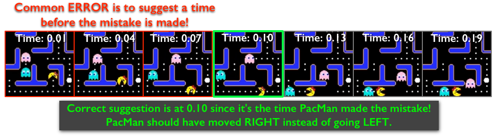
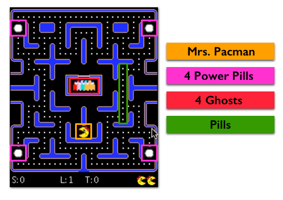
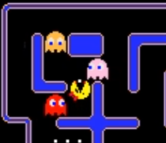
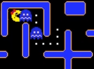

INSTRUCTIONS
Important: Although the tutorial gives multiple chance of viewing the video. But in the actual task, the video ONLY plays once. Also there is ONLY 1 wrong move.
You will watch a PacMan game and your task is to identify the time in seconds when PacMan makes a wrong move. Below is a frame-by-frame sequence in a video that demonstrates when you should suggest a wrong move. The example below is just one case of a wrong move. Thus, when suggesting a wrong move, consider the 3 PacMan Rules as well as the efficiency and accuracy of PacMan.

Please SCROLL DOWN and read the rest of the instructions in order to continue.
3 PACMAN RULES
1. The objective of this game is for PacMan to eat all the pills while earning as many points in order to win the game.

2. PacMan will try to evade the Ghosts. If a Ghosts catches PacMan, the game ends.

3. PacMan can eat one of the 4 power pills and in doing so makes the Ghosts edible. (TRICK: To earn more points, an edible Ghost is worth 200 points, while a pill is only worth 10 points.)

I have read and understood all the instructions. CLICK TO CLOSE THIS WINDOW.